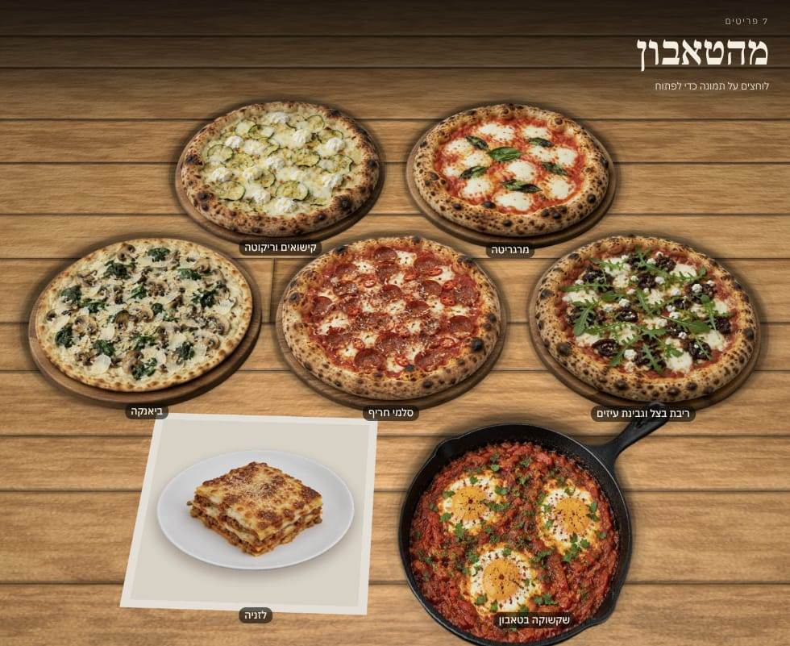
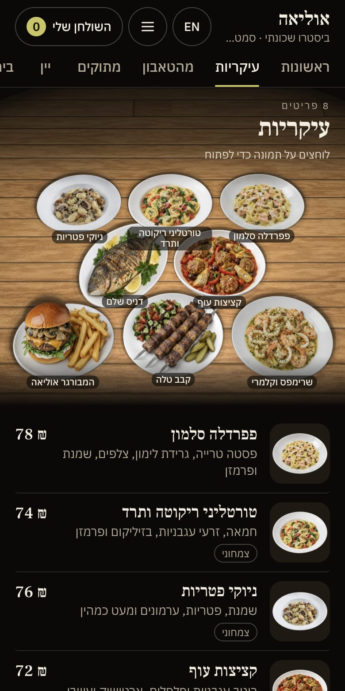
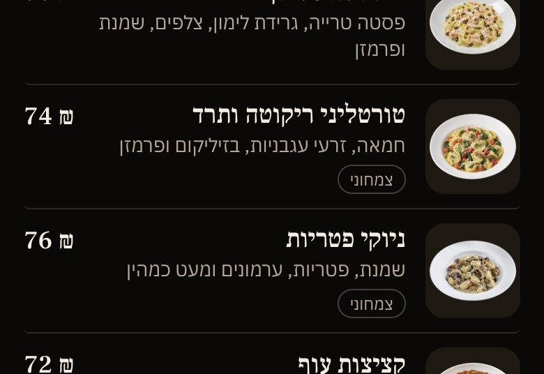
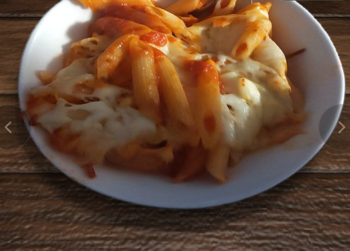

מצלמים כל מנה פעם אחת. הסועדים רואים אותה על השולחן.One photo per dish. Your guests see it on the table.
מנה היא תפריט דיגיטלי שבונים לבד: כותבים את המנות, מצלמים, מפרסמים, ומקבלים קישור וקוד QR קבועים. הסועדים סורקים ורואים את האוכל בתבליט תלת־ממדי, בלי אפליקציה.
Mana is a digital menu you build yourself: type the dishes, take the photos, publish, and get a permanent link and QR code. Guests scan and see the food in 3D relief, with no app.
חינם ל־30 יום מהפרסום הראשון. לא מבקשים כרטיס אשראי.
Free for 30 days from your first publish. No credit card asked.

זה מה שהסועדים שלכם יראוThis is what your guests will see
תפריט ההדגמה רץ כאן באמת, כמו אצל סועד שסרק את הקוד. נסו:
The demo menu runs here for real, as it would for a guest who scanned the code. Try:
- נגיעהTapנוגעים במנה כדי לראות אותה מקרובTap a dish to see it up close
- החלקהSwipeמחליקים הצידה כדי לעבור למנה הבאהSwipe sideways for the next dish
- מבט מקרובLook closerגוררים, והמנה מסתובבת מעט לכל צדDrag, and the dish turns a little each way
- ENעבהסועד מחליף שפה בנגיעה אחתA guest switches language in one tap
- אזלSold outמנה שאזלה נשארת בתפריט, מסומנתA sold-out dish stays on the menu, marked

התפריט החי שוקל כ־1.4 מ״ב ונטען בנפרד מהעמוד.The live menu weighs about 1.4 MB and loads separately from this page.
שלושה צעדים, ואתם עושים אותם לבדThree steps, and you do them yourself
-
כותבים את התפריטType the menu
קטגוריות, מנות, משקאות ומחירים, בעברית ובאנגלית. התיאורים והאלרגנים במילים שלכם.
Categories, dishes, drinks and prices, in Hebrew and English. Descriptions and allergens in your own words.

כך הטקסט שלכם נראה אצל הסועד: שם, תיאור, מחיר, תגיות.How your text reads for a guest: name, description, price, tags. -
מצלמים כל מנה פעם אחתTake one photo per dish
תמונה אחת מהטלפון מספיקה. הדפדפן שלכם הופך אותה לתבליט תלת־ממדי, בערך 10 שניות לתמונה במחשב נייד. אתם רואים את התוצאה ומאשרים רק מה שנראה לכם טוב; תמונה שלא יצאה טוב אפשר להציג כתמונה רגילה. מדריך הצילום
One phone photo is enough. Your browser turns it into a 3D relief, about 10 seconds a photo on a laptop. You see the result and approve only what looks right to you; a photo that did not come out well can be shown as a plain photo. Photo guide


תמונת טלפון אמיתית ממאגר פתוח, והתוצאה כפי שיצאה מהמחולל שבדפדפן, בלי תיקונים.A real phone photo from a public-domain set, and the result exactly as the in-browser generator made it, untouched. -
מפרסמים ומקבלים קוד QRPublish and get your QR code
בוחרים משטח לשולחן, מפרסמים, ומקבלים כתובת קבועה, halom.io/m/your-name, וקוד QR להדפסה. את השם (באותיות לטיניות) בוחרים פעם אחת. מכאן והלאה מעדכנים לבד.
Pick a table surface, publish, and get a permanent address, halom.io/m/your-name, and a QR code to print. You choose the name once. From then on you update it yourself.
18 משטחים לבחירה: עץ, שיש, פשתן, אריחים ועוד. הכרטיס הוא דוגמה לכרטיס שולחן, והקוד שעליו פותח את תפריט ההדגמה.18 surfaces to choose from: wood, marble, linen, tiles and more. The card is a sample table card, and its code opens the demo menu.
מה אתם מקבליםWhat you get
- קישור וקוד QR קבועים
- A permanent link and QR code
- הקוד שעל השולחן לא משתנה גם כשהתפריט משתנה. מדפיסים פעם אחת.
- The code on the table stays the same when the menu changes. Print it once.
- מעדכנים לבד
- You update it yourself
- מחיר, מנה חדשה, תמונה אחרת: עורכים ומפרסמים שוב. הגרסאות הקודמות נשמרות.
- A price, a new dish, a different photo: edit and publish again. Earlier versions are kept.
- "אזל" בזמן אמת
- Sold out, live
- מסמנים מנה שאזלה והסועדים רואים את זה מיד, בלי לפרסם מחדש.
- Mark a dish as sold out and guests see it at once, with no new publish.
- עברית ואנגלית
- Hebrew and English
- אתם כותבים את שתי השפות, והסועד בוחר. התפריט מתהפך לימין־לשמאל ובחזרה.
- You write both languages and the guest picks one. The menu flips between right-to-left and left-to-right.
- בלי אפליקציה ובלי הרשמה
- No app, no account
- נפתח בדפדפן של הטלפון. במכשיר שלא מצליח להציג את השולחן, התפריט מוצג כרשימה עם תמונות.
- It opens in the phone’s browser. On a device that cannot draw the table, the menu shows as a list with pictures.
- "השולחן שלי"
- “My table”
- הסועדים אוספים מנות לרשימה ומראים אותה למלצר. אם יש לכם עמוד הזמנות, אפשר להוסיף קישור אליו.
- Guests collect dishes into a list and show it to the waiter. If you have an ordering page, you can add a link to it.
כמה עולה לנסותWhat it costs to try
30 יום, חינם.30 days, free.
- הניסיון מתחיל בפרסום הראשון, לא ביום ההרשמה. בונים בנחת, והשעון מתחיל כשהתפריט עולה.The trial starts at your first publish, not on the day you sign up. Build at your own pace; the clock starts when the menu goes live.
- אין תשלום באתר ולא מבקשים כרטיס אשראי.Nothing is paid on the site and no credit card is asked.
- אחרי 30 יום: מנה נמצאת בפיילוט, ואת התנאים להמשך מסכמים ישירות עם Halom. דברו איתנוAfter 30 days: Mana is in pilot, and terms for continuing are agreed directly with Halom. Talk to us
- אם לא ממשיכים: הקישור נשאר שלכם ומציג "התפריט לא זמין כרגע". שום דבר לא נמחק.If you do not continue: the link stays yours and shows “This menu is not available right now”. Nothing is deleted.
שאלות, ותשובות ישרותQuestions, answered straight
אילו תמונות עובדות?Which photos work?
מנה אחת בתמונה, כולה בתוך הפריים, על רקע חלק שאינו בצבע הצלחת, מצולמת מהזווית שבה רואים צלחת כשיושבים לשולחן (בערך 45 מעלות), באור רך ובלי פלאש. תמונה מהטלפון מספיקה.
לא כל תמונה מצליחה. צלחת שנחתכת בקצה, שולחן עמוס או צלחת לבנה על מפה לבנה יוצאים פחות טוב, וחלקים דקים כמו ידית של מחבת או רגל של כוס עלולים להיעלם. במקרה כזה אפשר לנסות שוב, לצלם מחדש, או להציג את התמונה כמו שהיא. מדריך הצילום המלא
One dish per photo, all of it inside the frame, on a plain background that is not the plate’s colour, taken from the angle you see a plate when you sit down (about 45 degrees), in soft light with no flash. A phone photo is enough.
Not every photo works. A plate cut off by the frame, a crowded table or a white plate on a white cloth come out worse, and thin parts such as a pan handle or a glass stem can go missing. When that happens you can try again, reshoot, or show the photo as it is. The full photo guide
זה תלת־ממד מלא?Is it full 3D?
לא. זה תבליט: התמונה שלכם מקבלת עומק, ואפשר להטות את המנה מעט לכל צד. זה לא מודל שמסובבים מכל הכיוונים, ומה שלא צולם לא קיים. כשהמנה לא זזה, רואים את הצילום שלכם כמו שהוא.
No. It is a relief: your photo is given depth, and the dish can tilt a little each way. It is not a model you spin all the way round, and what was not photographed is not there. When the dish is still, guests see your photo as it is.
איפה התמונות שלי נמצאות?Where are my photos?
העיבוד נעשה בדפדפן שלכם, במכשיר שלכם, ולא בשרת. התמונה המקורית והטיוטות נשמרות בחשבון שלכם באחסון פרטי. לסועדים מגיע רק מה שאישרתם ופרסמתם.
The processing runs in your browser, on your device, not on a server. The original photo and the drafts are saved in your account in private storage. Guests only ever get what you approved and published.
כמה זמן זה לוקח?How long does it take?
בשימוש הראשון הדפדפן מוריד פעם אחת כ־72 מ״ב, אז עדיף Wi‑Fi. אחרי זה כל תמונה לוקחת בערך 10 שניות במחשב נייד. כמה זמן לוקח תפריט שלם תלוי במספר המנות ובתמונות שכבר יש לכם; עוד לא מדדנו את זה אצל מסעדה אמיתית, ונעדכן כאן כשנמדוד.
The first time, your browser downloads about 72 MB once, so Wi‑Fi is better. After that each photo takes about 10 seconds on a laptop. How long a whole menu takes depends on how many dishes you have and which photos already exist; we have not timed it with a real restaurant yet, and will update this when we have.
טלפון או מחשב?Phone or computer?
לסועדים: כל טלפון. לבניית התפריט אנחנו ממליצים על מחשב. את עיבוד התמונות בדקנו על מחשב נייד; על טלפונים עוד לא מדדנו אותו, ובטלפון עם מעט זיכרון הוא עלול להיכשל. אפשר לצלם בטלפון ולהעלות מהמחשב.
For guests: any phone. To build the menu we recommend a computer. We tested the photo processing on a laptop; we have not measured it on phones yet, and on a phone with little memory it may fail. You can shoot on the phone and upload from the computer.
מה קורה כשהניסיון נגמר?What happens when the trial ends?
הקישור והקוד נשארים שלכם. מי שסורק רואה עמוד שקט, "התפריט לא זמין כרגע", עם שם המסעדה. שום דבר לא נמחק: התפריט, התמונות והגרסאות מחכים, וכשמסכמים על המשך הכול חוזר כמו שהיה.
The link and the code stay yours. Whoever scans sees a calm page, “This menu is not available right now”, with the restaurant’s name. Nothing is deleted: the menu, the photos and the versions wait, and when you agree to continue everything comes back as it was.
אפשר להזמין דרך התפריט?Can guests order through the menu?
לא. מנה היא תפריט, לא מערכת הזמנות ולא קופה, ואין בה תשלום. אם יש לכם עמוד הזמנות קיים, מוסיפים קישור והוא מופיע בתפריט. בתוך המסעדה הסועדים אוספים מנות ל"שולחן שלי" ומראים למלצר.
No. Mana is a menu, not an ordering system or a till, and nothing is paid in it. If you already have an ordering page, add its link and it appears on the menu. In the restaurant, guests collect dishes in “My table” and show the waiter.
ומה עם אלרגנים?What about allergens?
את האלרגנים כותבים אתם, במילים שלכם, לכל מנה. מנה לא מנחשת ולא משלימה אותם. המידע הזה באחריות המסעדה, כמו בתפריט מודפס.
You write the allergens yourself, in your own words, for each dish. Mana never guesses or fills them in. That information is the restaurant’s responsibility, as on a printed menu.
יש הגבלה על גודל התפריט?Is there a limit on menu size?
עד 24 קטגוריות ו־240 פריטים בתפריט, ועד 5 ניסיונות עיבוד לכל תמונה. קובץ תמונה יכול לשקול עד 15 מ״ב.
Up to 24 categories and 240 items in a menu, and up to 5 processing attempts per photo. A photo file can weigh up to 15 MB.
איך נרשמים?How do I sign up?
עם אימייל וסיסמה, והחשבון פעיל מיד. בפיילוט עוד אין אימייל אישור ואין איפוס סיסמה אוטומטי: שכחתם סיסמה? כתבו לנו בוואטסאפ ונסדר.
With an e-mail and a password, and the account works at once. During the pilot there is no confirmation e-mail and no automatic password reset yet: forgot it? Message us on WhatsApp and we will sort it out.
דברו איתנוTalk to us
שאלה לפני שמתחילים, כמה סניפים, או שאתם רוצים שנעבור איתכם על התפריט הראשון: כתבו לנו ואדם מהצוות יחזור אליכם.
A question before you start, several branches, or you would like us to go through the first menu with you: write to us and a person from the team will get back to you.
קיבלנו, תודה.Received, thank you.
מספר הפנייה שלכם:Your reference:
אדם מהצוות יחזור אליכם. אם זה דחוף, וואטסאפ מהיר יותר.A person from the team will get back to you. If it is urgent, WhatsApp is quicker.